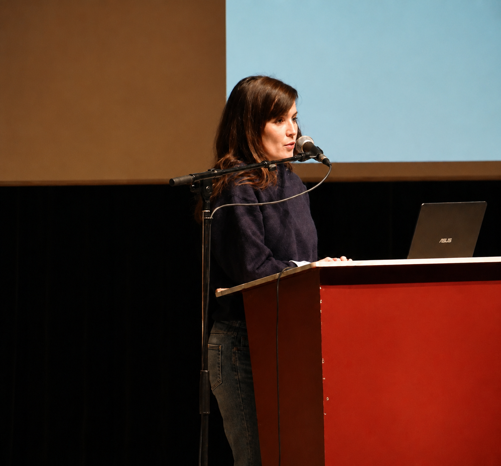
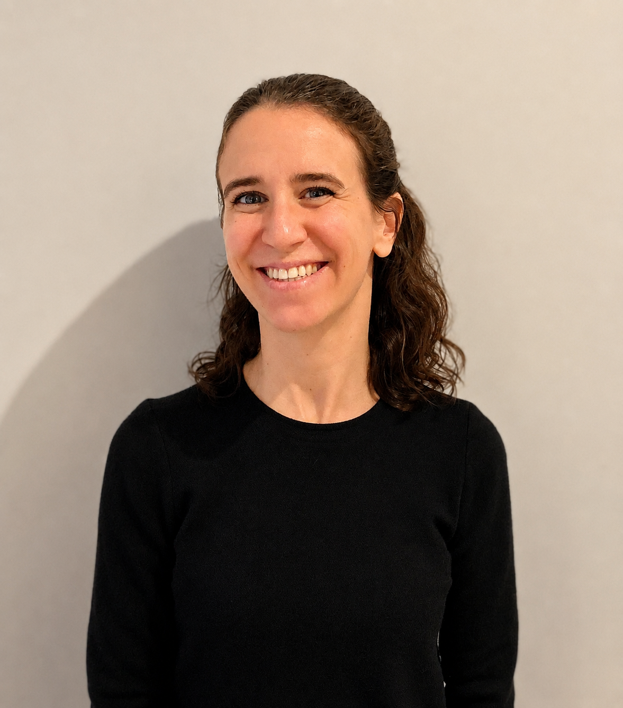
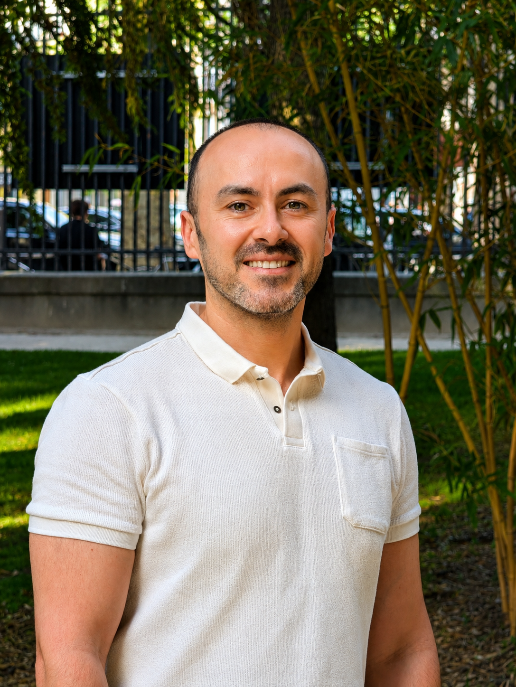
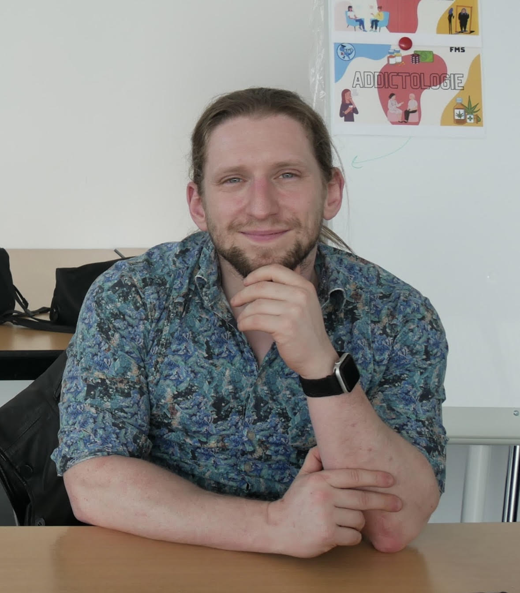
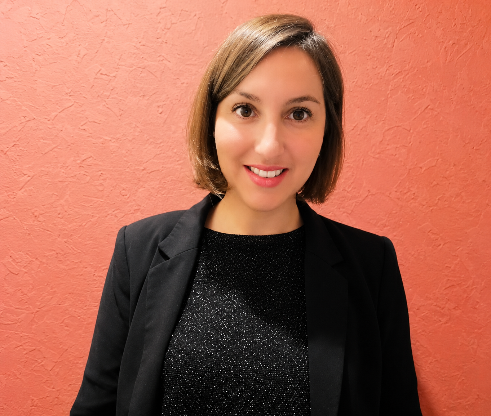

Our Team
Dedicated professionals committed to your mental health
The Professionals

Dr. Nora Hamdani
PsychiatristPsychiatrist, former head of a clinic at Paris hospitals and researcher (HDR). Specialized in the fine evaluation of complex pathologies, she combines dual clinical and scientific expertise to offer targeted care. Consults on Mondays, Tuesdays, and Thursdays
.Spécialités
- Bipolar Disorders
- Schizophrenia
- Fine Clinical Evaluation
Formation
- PhD in Sciences
- Higher Doctorate in Research
- Former Head of Clinic (AP-HP)

Dr. Isabelle Scheid
PsychiatristPsychiatrist for adults, former head of a clinic at Paris hospitals (Hôtel Dieu). Specialized in autism spectrum disorders (TSA), she has recognized expertise in diagnostic evaluation starting from age 18.
Spécialités
- TSA (adults from 18 years old)
- Anxiety Disorders
- Post-Traumatic Stress Disorders
Formation
- Master 2 in Neurosciences
- Former Head of Clinic
- Expertise TSA Network France

Dr. Zeyad Al Salloum
PsychiatristPsychiatrist and Hospital Practitioner in Paris, Dr. Zeyad AL SALLOUM has acquired solid experience in psychiatric emergencies, hospitalization, CMP, child psychiatry, and transcultural psychiatry. Consults on Wednesdays and Fridays.
Specialties
- Anxiety Disorders and Bipolar Disorders
- Psychotrauma and Child Psychiatry
- Social Psychological Rehabilitation
Formation
- DIU Psychiatry (Paris Diderot)
- DU in Adolescent Clinical Practice (Montsouris)
- Diploma in General Medicine

Dr. Franck Rolland
PsychiatristPsychiatrist and Hospital Practitioner in Paris, Dr. Franck Rolland has been practicing for several years at the hospital within the public service. Also trained in clinical psychology, he combines a rigorous medical approach with a deep understanding of psychotherapies. Consultations in general psychiatry, adult ADHD, and psychotherapies.
Specialties
- General Psychiatry
- Diagnostic Evaluation of Adult ADHD
- Psychotherapies (CBT, Hypnosis, Motivational Interviewing)
- Smoking Cessation and Family Support
Formation
- Psychiatrist
- Clinical Psychologist
- CBT Therapist (AFTCC)
- Medical Hypnotherapist
- Motivational Interviewing – Level 2 (AFDEM)

Ms. Céline Hebbache
PsychologistClinical Psychologist specialized in CBT and ACT therapy. With a strong hospital experience, she is an expert in evaluating bipolar disorders, conducting assessments, and facilitating therapeutic groups.
Specialties
- Bipolar Disorders
- Cognitive and Behavioral Therapies (CBT)
- Hypnotherapy
Formation
- Master in Psychopathology and Clinical Psychology, Empirical and CBT
- Paris Nanterre University
- Training in Interpersonal Therapy and Hypnotherapy
Ms. Laura Guedj
PsychologistClinical Psychologist specialized in integrative therapeutic approaches and individual accompaniment. She offers personalized follow-ups, in-depth psychological assessments, and supportive communication spaces.
Specialties
- Individual Psychotherapy
- Psychological Assessments
- Emotion Management
Formation
- Master in Clinical Psychology
- Integrative Therapeutic Approaches
- Specialized Continuing Education
Ms. Doïna Mazière
PsychologistClinical Psychologist specialized in neurodevelopmental disorders (ASD, ADHD). She conducts comprehensive evaluations and accompanies children, adolescents, and adults in developing concrete strategies adapted to their daily lives.
Specialties
- Neurodevelopmental Disorders
- ASD; ADHD Assessments (WISC, WAIS)
- Parental Guidance; CBT
Formation
- Master in Clinical Psychology
- Standardized Assessments (ADOS-2, ADI-R)
- Cognitive Remediation; CBT
Ms. Claire Saget
NeuropsychologistBoard-certified neuropsychologist, Claire Saget works with children, adolescents, and adults. She conducts comprehensive neuropsychological evaluations to better understand each individual's cognitive and emotional profile. She also provides memory assessments and individualized support tailored to neurological conditions, chronic illnesses, and post-injury rehabilitation.
Specialties
- Comprehensive Neuropsychological Evaluations (IQ, attention, memory, executive functions)
- Diagnostic Orientation (ADHD, learning disorders, HPI)
- Adult Memory Clinic (Global assessments, mnemonic and attentional evaluations)
- Post-Injury Follow-up (Stroke, traumatic brain injury) and Chronic Pathologies (MS, Parkinson...)
- Individualized Accompaniment and Parental Guidance
Formation
- Master in Clinical Psychology (Université de Franche-Comté, Besançon)
- Specialized in Neuropsychological Assessments and Individualized Support for Children and Adults

Join Our Team
CÉDIAPSY is always looking for passionate professionals to strengthen our team. If you share our values of compassion, excellence, and collaboration, we would be delighted to meet you.
- Stimulating and compassionate work environment
- Continuous training and supervision
- Interdisciplinary team collaboration
- Modern and accessible facilities